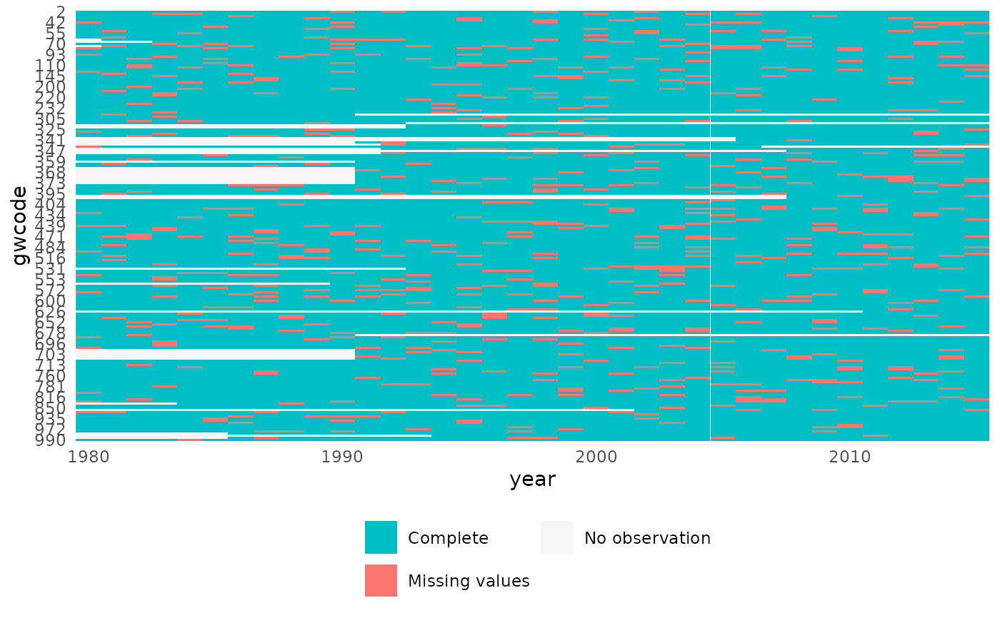
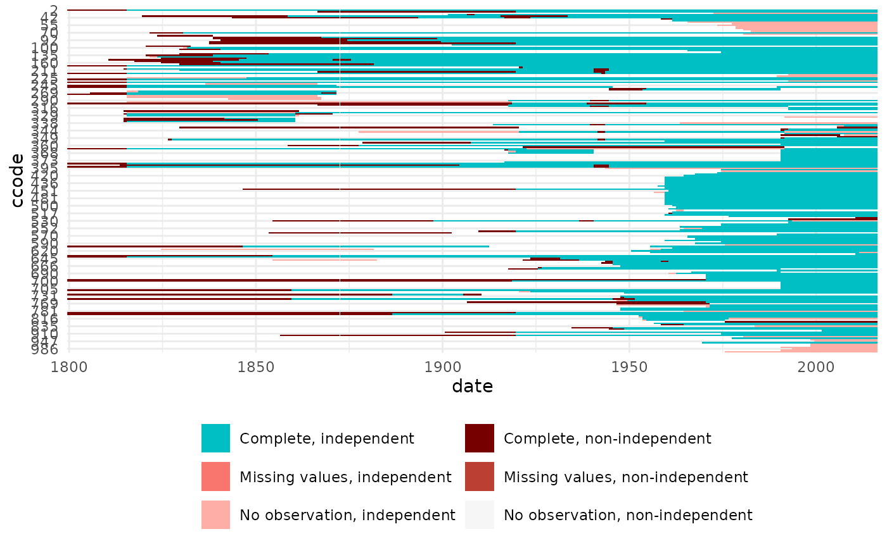

Visualize missing and non-proper cases for state panel data
Source:R/plot_missing.R
plot_missing.RdPlot missing values by country and date, and additionally identify country-date cases that do or do not match an independent state list.
plot_missing(data, x = NULL, space = NULL, time = "date", period = "year", statelist = "none", skip_labels = 5, partial = "exact") missing_info(data, x = NULL, space = NULL, time = "date", period = "year", statelist = "none", partial = "exact")
Arguments
| data | State panel data frame |
|---|---|
| x | Variable names(s), e.g. "x" or c("x1", "x2"). Default is NULL, in which case all columns expect the space and time ID columns will be used. |
| space | Name of variable identifying state country codes. If NULL (default) and one of "gwcode" or "cowcode" is a column in the data, it will be used. |
| time | Name of time identifier, the corresponding variables needs to be Date class. Default is "date". |
| period | Temporal resolution character string, e.g. "year" or "month".
See details in |
| statelist | Check not only missing values, but presence or absence of observations against a list of independent states? "none" or "GW" or "COW". |
| skip_labels | Only plot the label for every n-th country on the y-axis to avoid overplotting. |
| partial | Option for how to handle edge cases where a state is independent
for only part of a time period (year, month, etc.). Options include
"exact", and "any". See |
Value
plot_missing returns a ggplot2 object.
missing_info returns a data frame with components:
Space identifier, with name equal to the "space" argument, e.g. "ccode".
Time identifier, with name equal to the "time" argument, e.g. "date".
A logical vector, is the statelist argument is none, NA.
A logical vector indicating if that record has missing values
The label used for plotting, combining the independence and missing value information for a case as appropriate.
Details
missing_info provides the information that is plotted with
plot_missing. The latter returns a ggplot, and thus can be chained
with other ggplot functions as usual.
Examples
# Create an example data frame with missing values cy <- state_panel(as.Date("1980-06-30"), as.Date("2015-06-30"), by = "year", useGW = TRUE) cy$myvar <- rnorm(nrow(cy)) cy$myvar[sample(1:nrow(cy), nrow(cy)*.1, replace = FALSE)] <- NA str(cy)#> 'data.frame': 6654 obs. of 3 variables: #> $ gwcode: int 2 2 2 2 2 2 2 2 2 2 ... #> $ date : Date, format: "1980-06-30" "1981-06-30" ... #> $ myvar : num -1.40004 0.25532 -2.43726 -0.00557 0.62155 ...# Visualize missing values: plot_missing("myvar", cy, "gwcode", "date", "year", "none")#> Warning: The order of the 'data' and 'x' arguments has switched, please adjust code accordingly. #> plot_missing(data, x, ...) #> missing_info(data, x, ...)# missing_info() generates the data underlying plot_missing(): head(missing_info("myvar", cy, "gwcode", "date", "year", "none"))#> Warning: The order of the 'data' and 'x' arguments has switched, please adjust code accordingly. #> plot_missing(data, x, ...) #> missing_info(data, x, ...)#> gwcode date independent missing_value status #> 1 2 1980-06-30 NA FALSE Complete #> 2 20 1980-06-30 NA FALSE Complete #> 3 31 1980-06-30 NA FALSE Complete #> 4 40 1980-06-30 NA TRUE Missing values #> 5 41 1980-06-30 NA FALSE Complete #> 6 42 1980-06-30 NA FALSE Complete# if we specify a statelist to check against, 'independent' will have values # now: head(missing_info("myvar", cy, "gwcode", "date", "year", "GW"))#> Warning: The order of the 'data' and 'x' arguments has switched, please adjust code accordingly. #> plot_missing(data, x, ...) #> missing_info(data, x, ...)#> gwcode date independent missing_value status #> 1 2 1980-06-30 1 FALSE Complete, independent #> 2 2 1981-06-30 1 FALSE Complete, independent #> 3 2 1982-06-30 1 FALSE Complete, independent #> 4 2 1983-06-30 1 FALSE Complete, independent #> 5 2 1984-06-30 1 FALSE Complete, independent #> 6 2 1985-06-30 1 FALSE Complete, independent# Check data also against G&W list of independent states head(missing_info("myvar", cy, "gwcode", "date", "year", "GW"))#> Warning: The order of the 'data' and 'x' arguments has switched, please adjust code accordingly. #> plot_missing(data, x, ...) #> missing_info(data, x, ...)#> gwcode date independent missing_value status #> 1 2 1980-06-30 1 FALSE Complete, independent #> 2 2 1981-06-30 1 FALSE Complete, independent #> 3 2 1982-06-30 1 FALSE Complete, independent #> 4 2 1983-06-30 1 FALSE Complete, independent #> 5 2 1984-06-30 1 FALSE Complete, independent #> 6 2 1985-06-30 1 FALSE Complete, independentplot_missing("myvar", cy, "gwcode", "date", "year", "GW")#> Warning: The order of the 'data' and 'x' arguments has switched, please adjust code accordingly. #> plot_missing(data, x, ...) #> missing_info(data, x, ...)# To check all variables: # plot_missing(setdiff(colnames(df), "space", "time"), ...) # Live example with Polity data data("polity") head(polity)#> ccode year polity #> 1 700 1800 -6 #> 2 700 1801 -6 #> 3 700 1802 -6 #> 4 700 1803 -6 #> 5 700 1804 -6 #> 6 700 1805 -6polity$date <- as.Date(paste0(polity$year, "-12-31")) plot_missing(polity, "polity", "ccode", "date", "year", "COW")# COW starts in 1816; Polity has excess data for several non-independent # states after that date, and is missing coverage for several countries. # The date option is relevant for years in which states gain or lose # independence, so this will be slighlty different: polity$date <- as.Date(paste0(polity$year, "-01-01")) plot_missing(polity, "polity", "ccode", "date", "year", "COW")# plot_missing returns a ggplot2 object, so you can do anything you want plot_missing(polity, "polity", "ccode", "date", "year", "COW") + ggplot2::coord_flip()